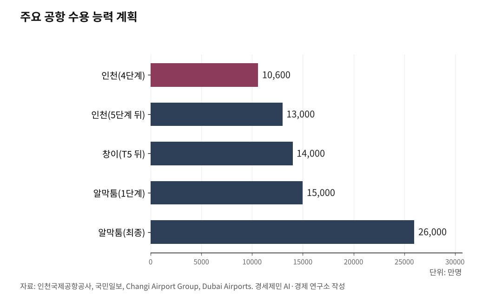

인천공항 25년, 67조원 생산유발 세계 3위… 5단계 없으면 추월당한다
18조원 82% 자체조달, 누적 배당 3조원… 5단계 6조원 재원 충분
홍콩·두바이·창이 확장 경쟁, 인천 GRDP 39%가 공항에 달렸다
인천국제공항(ICN)이 2001년 3월 29일 개항한 지 25년을 맞았다. 2025년 국제여객 7407만명, 국제화물 295만톤을 기록하며 국제공항협의회 ACI(Airports Council International) 기준 세계 3위 공항으로 올라섰다(인천국제공항공사, 2026.3.27.). 101개 항공사가 53개국 183개 도시에 취항하고 있다. 환승객은 804만명으로 일본 등 주변 지역의 환승 수요를 흡수하는 동북아 대표 허브공항이 됐다. 그러나 경쟁공항들이 인천보다 큰 규모로, 인천보다 빠른 속도로 확장하고 있다.

1. 18조원 82% 자체조달, 5단계 6조원 감당할 체력
인천공항 1~4단계 확장공사 총사업비는 18조170억원이다. 이 가운데 국고지원은 18%인 3조2874억원에 불과하다. 나머지 82%는 공사채 발행 등 자체조달로 충당했다(인천국제공항공사, 2026.3.27.).
국가재정에도 기여한다. 2025년 기준 정부 배당 3194억원, 국세 1315억원, 지방세 738억원 등 연간 총 5000억원 규모를 납부한다. 2007년부터 2024년까지 누적 배당금은 약 3조269억원이다.
코로나19 팬데믹 기간에는 약 1조7000억원의 누적 적자를 감수하면서 약 2조5000억원 규모의 사용료 감면과 3802억원 규모의 납부 유예로 국가적 위기 극복에 동참했다. 코로나19 기간 정부의 별도 재정지원 없이 자력으로 버텼다(경향신문, 2024.6.11.).
5단계 사업비는 약 6조원이다(국민일보, 2024.10.13.). 18조원을 82% 자체조달한 공사가 6조원을 감당하지 못할 이유가 없다.

2. 생산유발효과 67조원, 인천 GRDP의 39%
인천공항의 생산유발효과는 67조원(2024년 직접효과 기준)으로 국가 GDP의 2.6%를 차지한다. 인천지역 생산유발효과는 48조원으로 지역총생산 GRDP(Gross Regional Domestic Product)의 39%에 달한다(인천국제공항공사, 2026.3.27.).
인천 경제의 4할이 인천공항에 걸려 있다. 5단계 확장이 지연되면 인천공항의 성장이 멈추고, 인천 경제에 직격탄이 된다. 해외사업도 성과를 내고 있다. 전 세계 18개국에서 42개 사업을 수주해 누적 수주액 5억8558만달러(약 8060억원)를 기록했다(인천국제공항공사, 2026.3.27.). K-공항 수출이다.
3. 창이 1억4000만명, 알막툼 2억6000만명… 인천은 1억600만명
인천공항의 국제선 용량은 연간 1억600만명이다. 홍콩국제공항(HKG) 1억2000만명, 두바이국제공항(DXB) 1억1500만명에 이어 세계 3위다(인천국제공항공사, 2026.3.27.). 그러나 경쟁공항들은 이미 인천을 넘어서는 확장에 착수했다.
싱가포르 창이공항(SIN)은 2025년 5월 제5터미널(T5)에 착공했다. 사업비 약 100억달러(약 14조원), 수용 능력을 현재 9000만명에서 1억4000만명으로 늘린다. 2030년대 중반 완공 예정이다(Changi Airport Group, 2025.5.).
두바이는 더 파격적이다. 현재의 두바이국제공항(DXB)을 대체할 알막툼국제공항(DWC)에 348억달러(약 49조원)를 투입한다. 활주로 5개, 게이트 400개를 갖춘 세계 최대 규모의 신규 공항이다. 1단계 완공(2032년 목표) 시 수용 능력 1억5000만명, 최종 완공 시 2억6000만명이다(Dubai Airports, 2024.4.). 에미레이트항공(Emirates)은 2032년까지 전면 이전할 계획이다.
인천공항 5단계가 완공돼도 수용 능력은 1억3000만명이다(국민일보, 2024.10.13.). 창이보다 1000만명 적고, 알막툼 1단계보다 2000만명 적다.
4. 호르무즈 봉쇄, 두바이 허브의 구조적 약점이 드러났다
두바이의 49조원짜리 확장 계획은 거대하다. 그러나 2026년 2월 28일 미국과 이스라엘이 이란을 공습한 뒤 이란이 호르무즈 해협 봉쇄를 선언하면서 두바이 허브의 구조적 약점이 드러났다.
국토교통부는 2026년 2월 28일부터 '중동 상황 관련 항공 분야 대응반'을 가동했다. 이란·이스라엘·이라크·UAE·카타르·쿠웨이트·사우디아라비아·요르단 등 9개국 공역이 전부 또는 일부 통제됐다(국토교통부, 2026.3.3.). 대한항공 인천~두바이(주 7회), 에미레이트항공 인천~두바이(주 10회), 에티하드항공 인천~아부다비(주 11회), 카타르항공 인천~도하(주 8회)가 결항했다. 대한항공은 결항을 4월 19일까지 연장했다(대한항공, 2026.3.17.). 2월 28일부터 50일 넘게 운항이 중단된 것이다.
이것은 처음이 아니다. 대한항공 인천~텔아비브 노선은 2023년 10월 하마스-이스라엘 충돌 이후 2년 6개월째 운휴 상태다(한국경제, 2026.2.28.). 홍해 수에즈 운하 통항량은 2024년 후티 공격 이후 2023년 대비 60% 낮은 수준에 머물러 있다(BIMCO, 2026.1.7.). 텔아비브 2년 6개월, 홍해 2년, 호르무즈 50일. 중동 지정학 리스크는 일회성이 아니라 반복되는 구조다.
두바이가 세계 최대 공항을 짓더라도 분쟁이 터질 때마다 하늘길이 막히는 구조적 한계를 안고 있다. 인천공항은 이 리스크에서 구조적으로 자유롭다. 중동발 환승 수요가 대안 허브를 찾을 때 인천공항이 선택지가 되려면 5단계 확장으로 수용 능력을 갖춰야 한다.
5. 히드로의 교훈, 확장 적기를 놓치면 허브를 잃는다
런던 히드로국제공항(LHR)은 2000년대 초반 유럽 대표 허브공항이었다. 그러나 인프라 확장을 적기에 하지 못하면서 프랑크푸르트국제공항(FRA)과 암스테르담 스키폴공항(AMS)에 허브 지위를 내줬다. 인천공항공사 관계자는 "히드로가 확장 시기를 놓치면서 유럽 허브 경쟁에서 밀린 사례를 교훈으로 삼아야 한다"고 지적했다(경인일보, 2025.11.30.).
인천공항도 같은 상황에 놓여 있다. 국토교통부 제6차 공항개발 종합계획에 따르면 2033년이면 여객 수요가 현재 수용력(1억600만명)에 도달한다. 공항 인프라는 설계부터 완공까지 8~10년이 걸린다. 인천공항은 3단계 사업이 2년 지연돼 2016년 수하물 대란이 벌어진 전례가 있다(경향신문, 2025.7.22.).
5단계 사업의 제7차 공항개발 종합계획(2026~2030) 반영 여부는 아직 결정되지 않았다. 창이는 이미 삽을 떴고, 알막툼은 세계 최대를 향해 달리고 있다. 중동 하늘길이 반복적으로 막히는 지금, 동북아 허브 인천공항의 5단계를 더 이상 미룰 수 없다.
참고문헌
인천국제공항공사, "인천국제공항 개항 25주년 보도자료", 2026.3.27., https://www.airport.kr
인천투데이, "인천국제공항 개항 25주년, 세계 3위 동북아 허브공항 도약", 2026.3.27., https://www.incheontoday.com
국토교통부, "중동 상황 관련 항공 분야 대응반 회의", 2026.3.3. (머니투데이 인용, https://www.mt.co.kr/estate/2026/03/03/2026030318411047567)
대한항공, "인천~두바이 노선 결항 4월 19일까지 연장", 2026.3.17. (한국정경신문 인용, https://kpenews.com/View.aspx?No=4007187)
한국경제, "두바이행 대한항공 항공기 회항…중동 하늘길 막혔다", 2026.2.28., https://www.hankyung.com/article/2026022816367
경향신문, "정부, 인천공항 적자 땐 한푼도 안 줘놓고…흑자 땐 절반 가까이 꿀꺽", 2024.6.11., https://www.khan.co.kr/article/202406111041001
경향신문, "인천공항 5단계 확장 놓고 이견", 2025.7.22., https://www.khan.co.kr/article/202507220600001
국민일보, "인천공항 1.3억명 수용 가능한 5단계 검토 중", 2024.10.13., https://www.kmib.co.kr/article/view.asp?arcid=0020615599
Changi Airport Group, "Terminal 5 Groundbreaking", 2025.5., https://www.changiairport.com/en/corporate/about-us/future-developments.html
Dubai Airports, "DWC Phase Two Expansion", 2024.4., https://dubaiairports.ae/corporate/our-story/dwc-dubai-world-central
BIMCO, "Suez Canal transits still 60% down 100 days after the last Houthi attack", 2026.1.7., https://www.bimco.org/news-insights/market-analysis/shipping-number-of-the-week/2026/0107-snow/
경인일보, "하늘길 경쟁, 지역 넘어 동북아로… 허브공항 서두른다", 2025.11.30., https://www.kyeongin.com/article/1755738
※ 이 기사는 인공지능을 활용해 작성했습니다. 사실관계는 저자가 확인했습니다.
관련기사
- [세계3위 인천공항미래⑮·끝] 무게는 세계 3위, 질은 아직 뒤졌다
- 인천공항 매출 2조5천억인데 인천 몫은 1조3천억… '공항경제권' 빠진 성장
- [세계3위 인천공항미래⑭] 흑자 절반은 국고로, 부채비율 96%… 배당을 5단계에 묶어야 한다
- 배당 3조3500억 빠져나간 인천공항, 이제 통합까지… 인천시 항공예산 40% 삭감
저작권자 © AI경세제민 무단전재 및 재배포, AI학습 및 활용 금지